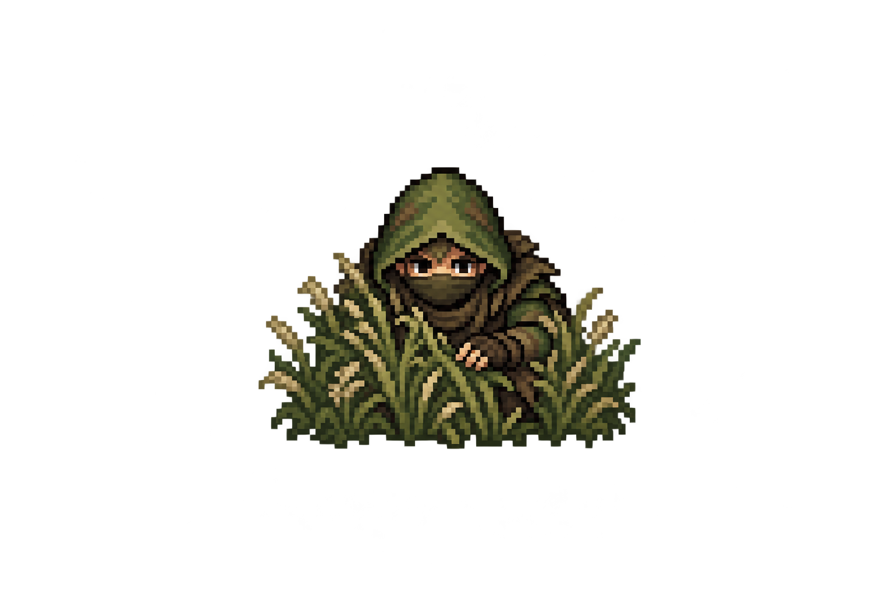

Présentation
Apparence de la vigie
La vigie de l’Éclaireur prend l’apparence d’un guetteur camouflé.
Comprendre ce que cela implique
Le petit guetteur représente la balise de surveillance existante. Sa silhouette basse et ses herbes sont un choix graphique, sans bonus supplémentaire de furtivité.
Le cercle visible reste celui de la surveillance officielle. La taille du dessin varie avec le zoom ; cette variation ne modifie ni le rayon ni les alertes.

Dans cet article
Détails de référence
Texte de référence mis en forme et conservé dans l’historique de cet article. Les paragraphes datés peuvent décrire une évolution ou une étape antérieure.
La balise de vigie de l’Éclaireur est représentée par un guetteur accroupi dans les herbes. Capuche vert mousse et brune, masque de tissu et silhouette basse évoquent une tenue furtive inspirée d’un ninja médiéval.
Une seule pose de face suffit : la vigie est immobile et reste face à l’écran, sans animation de marche. Son dessin mesure 40 pixels de haut à l’échelle normale, contre environ 64 pour un héros. Les herbes servent de contact visuel avec le sol ; aucune ombre ovale n’est ajoutée. Le zoom adapte sa taille comme les autres illustrations de carte.
Le sprite remplace uniquement le symbole de balise déjà affiché. Le cercle de surveillance conserve son rayon officiel. Les positions, alertes, conditions de visibilité et règles de détection restent contrôlées par le serveur. L’apparence camouflée ne constitue pas un nouveau bonus de furtivité.
Création
Mode : outil intégré imagegen, fond transparent. Asset : app/assets/groups/watch-lookout-v1.png. Le PNG original est conservé, sans retouche des pixels ; le module mesure le rectangle occupé pour afficher le sprite à petite échelle.
Prompt utilisé :
Single front-facing stationary stealth lookout game sprite, transparent background. 16-bit JRPG chunky pixel art, compact chibi proportions, crisp square pixels and dark restrained outlines, matching medieval map characters. One small crouching ranger concealed behind a low tuft of wild grasses, muted moss green and brown hooded camouflage clothes inspired by a medieval ninja, cloth mask covers nose and mouth, only watchful eyes visible. No modern military gear, no gun, no bright accents. Kneeling very low, shoulders huddled, one hand quietly parting grass, grasses partly obscure torso and legs. Very compact low silhouette, character and grass one connected sprite. Slightly elevated front orthographic view. One pose only centered with generous transparent margins, no environment, no ground plane, no oval shadow, no text, no sheet, no glow. Readable at 40 pixels tall, visually smaller than a hero.